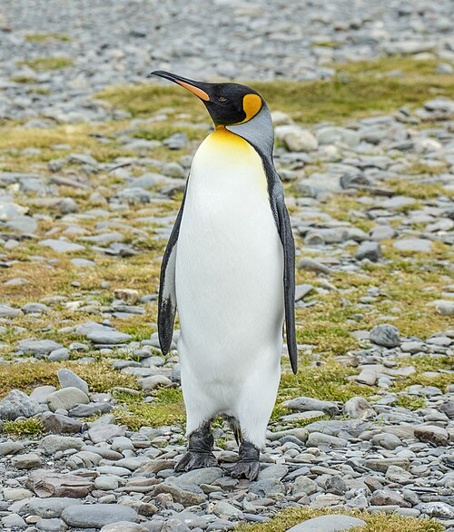
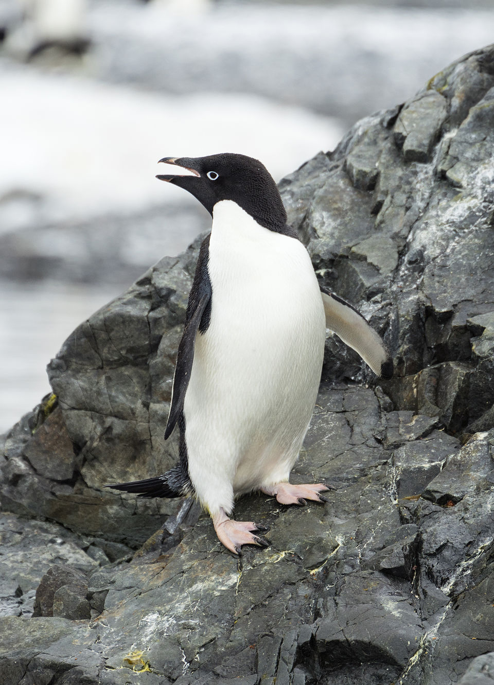
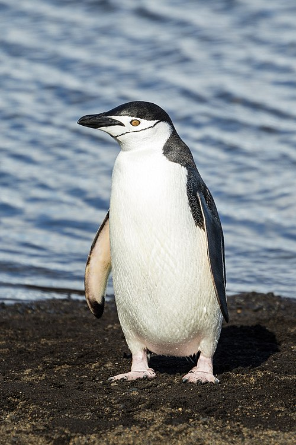

Different Species of Penguins
There are 18 recognized species of penguins, each with unique characteristics and adaptations to their environments. Some of the most well-known species include:
| Emperor Penguin (Aptenodytes forsteri) | King Penguin (Aptenodytes patagonicus) | Adélie Penguin (Pygoscelis adeliae) | Chinstrap Penguin (Pygoscelis antarcticus) | Gentoo Penguin (Pygoscelis papua) |
|---|---|---|---|---|
| Largest of all penguin species, known for their distinctive black and white plumage and yellow ear patches. | Second largest species, recognizable by their bright orange beak and yellow-orange markings on the head. | Medium-sized penguin with a white ring around the eye, commonly found along the Antarctic coast. | Named for the narrow black band under their heads, giving the appearance of a chinstrap. | Known for their bright orange beak and white stripe across the top of their head. |
 |
 |  |  |  |
Fill out the form below if you would like to get more info about the species listed or request information about other species.
Required fields are marked with an asterisk*.
We will get back to you as soon as possible.